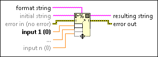

Format Into String Function
Owning Palette: String Functions
Requires: Base Development System
Formats string, path, enumerated type, time stamp, Boolean, or numeric data as text.
You can use the Format Into String function to convert a number into a string. To format data as text and write the text to a file, use the Format Into File function instead.

 Add to the block diagram Add to the block diagram |
 Find on the palette Find on the palette |